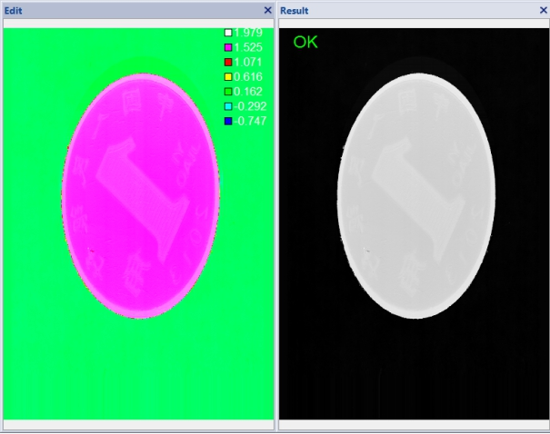
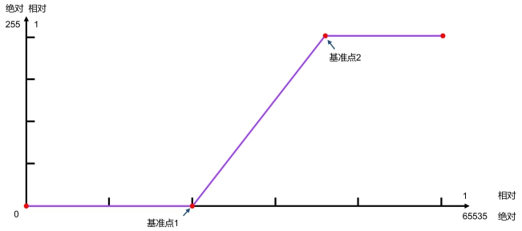
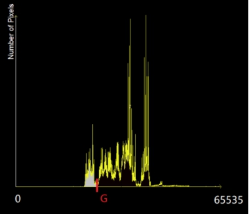
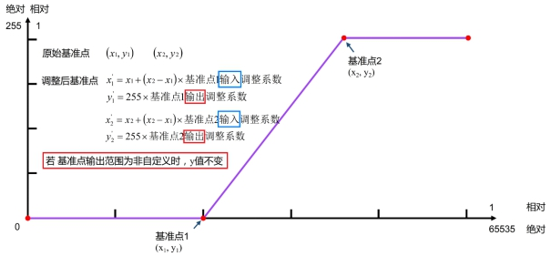
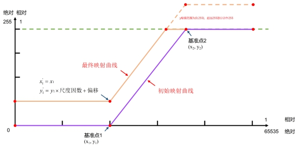

Chức năng của công cụ chuyển đổi hình ảnh chiều sâu sang hình ảnh xám là chuyển đổi hình ảnh chiều sâu 16 bit thành hình ảnh xám 8 bit thông qua phương pháp ánh xạ pixel.

| Phân loại | Tên tham số | Mô tả tham số |
|---|---|---|
| Cửa sổ thuộc tính | Loại ROI | Khu vực cần kiểm tra, phân thành 4 loại: toàn bộ hình ảnh, hình chữ nhật affine, hình tròn, đa giác. |
| Phương pháp ánh xạ pixel | Xác định điểm基准 đường cong ánh xạ, phân thành 5 loại: tối thiểu tối đa, cao thấp phần đuôi, trung bình độ lệch chuẩn, ánh xạ tuyến tính, chế độ vật lý. | |
| Hệ số độ lệch chuẩn 1/2 | Tham số này chỉ hiệu lực khi phương pháp ánh xạ pixel chọn trung bình độ lệch chuẩn, tức là xác định điểm基准 theo trung bình và độ lệch chuẩn. Phạm vi tham số (-1000, 0]/[0, +1000). | |
| Phần số phần đuôi cao/thấp | Tham số này chỉ hiệu lực khi phương pháp ánh xạ pixel chọn cao thấp phần đuôi, tức là xác định điểm基准 theo phần số phần đuôi thấp và phần số phần đuôi cao. Phạm vi tham số [0,1], và tổng phần số phần đuôi cao thấp nhỏ hơn hoặc bằng 1. | |
| Hệ số điều chỉnh đầu vào điểm基准 1 | Theo tham số này thu nhỏ giá trị trục X của điểm基准 1. Phạm vi tham số [-1,0]. | |
| Hệ số điều chỉnh đầu vào điểm基准 2 | Theo tham số này mở rộng giá trị trục X của điểm基准 2. Phạm vi tham số [0,1]. | |
| Phạm vi đầu ra điểm基准 | Phân thành 3 loại: phạm vi hoàn chỉnh, phạm vi hoàn chỉnh đảo ngược, tùy chỉnh. | |
| Hệ số điều chỉnh đầu ra điểm基准 1 | Theo tham số này điều chỉnh giá trị trục Y của điểm基准 1. Phạm vi tham số [0,1]. Tham số này chỉ hiệu lực khi phạm vi đầu ra điểm基准 chọn tùy chỉnh. | |
| Hệ số điều chỉnh đầu ra điểm基准 2 | Theo tham số này điều chỉnh giá trị trục Y của điểm基准 2. Phạm vi tham số [0,1]. Tham số này chỉ hiệu lực khi phạm vi đầu ra điểm基准 chọn tùy chỉnh. | |
| Hệ số tỷ lệ | Điều chỉnh hệ số thu phóng của đầu ra ánh xạ cuối cùng. Phạm vi tham số (0, +1000). | |
| Độ lệch đầu ra ánh xạ | Điều chỉnh độ lệch của đầu ra ánh xạ cuối cùng. Phạm vi tham số [0, +1000). | |
| Giá trị vật lý thấp hướng Z | Tham số này chỉ hiệu lực khi phương pháp ánh xạ pixel chọn chế độ vật lý, chỉ định giá trị chiều cao thấp nhất của đầu vào ánh xạ | |
| Giá trị vật lý cao hướng Z | Tham số này chỉ hiệu lực khi phương pháp ánh xạ pixel chọn chế độ vật lý, chỉ định giá trị chiều cao cao nhất của đầu vào ánh xạ | |
| Giá trị biên xám 1 | Tham số này chỉ hiệu lực khi phương pháp ánh xạ pixel chọn chế độ vật lý, chỉ định giá trị xám thấp nhất của đầu ra ánh xạ | |
| Giá trị biên xám 2 | Tham số này chỉ hiệu lực khi phương pháp ánh xạ pixel chọn chế độ vật lý, chỉ định giá trị xám cao nhất của đầu ra ánh xạ | |
| Thiết lập giá trị pixel thiếu | Chọn “Có”, thì thiết lập giá trị pixel (0~255) cho pixel thiếu; chọn “Không”, pixel thiếu thì sử dụng giá trị pixel mặc định 0. | |
| Bật thống kê histogram | Chọn “Có”, thì thực hiện thống kê histogram để tính trung bình, giá trị nhỏ nhất, giá trị lớn nhất, phần đuôi thấp, phần đuôi cao và độ lệch chuẩn. | |
| Cửa sổ hình ảnh | Hình ảnh chiều sâu | Hiển thị hình ảnh chiều sâu cần kiểm tra, hiển thị dưới dạng hình ảnh màu giả. |
| Khu vực kiểm tra | Hiển thị khu vực cần kiểm tra trên hình ảnh. | |
| Chuỗi dữ liệu | Hình ảnh chiều sâu đầu vào | Hình ảnh chiều sâu đầu vào cần kiểm tra. |
| Biến đổi tuyến tính hai chiều | Biến đổi tịnh tiến, xoay, thu phóng của mục tiêu so với mẫu. | |
| Giao diện nâng cao | Không | Không |
| Phân loại | Tên tham số | Mô tả tham số |
|---|---|---|
| Cột đầu ra | Hình ảnh xám đầu ra | Chiều dài và chiều rộng của hình ảnh đầu ra cùng kích thước pixel. |
| Điểm基准 1 | Đầu vào đầu ra tương đối và đầu vào đầu ra tuyệt đối của điểm基准 1. | |
| Điểm基准 2 | Đầu vào đầu ra tương đối và đầu vào đầu ra tuyệt đối của điểm基准 2. | |
| Trung bình | Giá trị trung bình của mức xám pixel trong hình ảnh. | |
| Giá trị nhỏ nhất | Giá trị nhỏ nhất của mức xám pixel trong hình ảnh. | |
| Giá trị lớn nhất | Giá trị lớn nhất của mức xám pixel trong hình ảnh. | |
| Phần đuôi thấp | Làm cho lượng dữ liệu nhỏ hơn một giá trị nhất định (tức phần đuôi thấp) đạt tỷ lệ chỉ định (tức phần số phần đuôi thấp). | |
| Phần đuôi cao | Làm cho lượng dữ liệu lớn hơn một giá trị nhất định (tức phần đuôi cao) đạt tỷ lệ chỉ định (tức phần số phần đuôi cao). | |
| Độ lệch chuẩn | Độ lệch chuẩn của mức xám pixel trong hình ảnh. | |
| Kết quả thực thi | Kết quả thực thi công cụ. | |
| Thời gian thực thi | Thời gian thực thi công cụ. |
Nguyên lý của công cụ chuyển đổi hình ảnh chiều sâu sang hình ảnh xám là dựa theo quan hệ hàm ánh xạ để chuyển đổi hình ảnh 16 bit thành hình ảnh 8 bit, hàm ánh xạ như hình 2 cho thấy, trong đó trục X biểu thị giá trị pixel của hình ảnh 16 bit đầu vào, trục Y biểu thị giá trị pixel của hình ảnh 8 bit đầu ra, thông qua quan hệ ánh xạ có thể thu được giá trị pixel hình ảnh 8 bit tương ứng với mỗi giá trị pixel hình ảnh 16 bit.

Bước thứ nhất: Phương pháp ánh xạ pixel
Tối thiểu tối đa: Xác định điểm基准 gốc theo giá trị nhỏ nhất và giá trị lớn nhất của mức xám hình ảnh.
x1 = giá trị xám nhỏ nhất, y1= 0.
x2= giá trị xám lớn nhất, y2 = 255.
Cao thấp phần đuôi: Xác định điểm基准 ban đầu theo phần số phần đuôi cao thấp. Phương pháp này có thể loại trừ một số điểm nhiễu có mức xám thấp hơn hoặc cao hơn.
Giả sử phần số phần đuôi thấp là m, phần số phần đuôi cao là n, thì: cách tính điểm基准 gốc x1: khi tỷ lệ giữa số lượng mức xám (số pixel) trong khoảng mức xám 0~G với tổng số mức xám của hình ảnh (tổng số pixel) bằng m, thì đặt x1=G, y1=0.

Cách tính điểm基准 gốc x2: khi tỷ lệ giữa số lượng mức xám (số pixel) trong khoảng mức xám G~65535 với tổng số mức xám của hình ảnh (tổng số pixel) bằng n, thì đặt x2=G, y2=255.
Trung bình độ lệch chuẩn: Xác định điểm基准 gốc theo giá trị trung bình và độ lệch chuẩn của mức xám hình ảnh. Phương pháp này có thể loại trừ một số điểm nhiễu có mức xám thấp hơn hoặc cao hơn.
Giả sử hệ số độ lệch chuẩn 1 là a, hệ số độ lệch chuẩn 2 là b, thì:
x1 = a*dev+mean, y1 = 0.
x2 = b*dev+mean, y2= 255.
Trong đó mean là giá trị trung bình mức xám của hình ảnh, dev là độ lệch chuẩn.
Ánh xạ tuyến tính: Thu được điểm基准 gốc theo một biến đổi tuyến tính.
x1 = 0, y1= 0.
x2 = 65535, y2= 255.
Chế độ vật lý: Trực tiếp chỉ định phạm vi ánh xạ, không cần bước thứ hai, bước thứ ba thiết lập cấu hình.
Dữ liệu có giá trị chiều cao thấp hơn giá trị vật lý thấp hướng Z ánh xạ thành giá trị biên xám 1;
Dữ liệu có giá trị chiều cao thấp hơn giá trị vật lý cao hướng Z ánh xạ thành giá trị biên xám 2;
Dữ liệu trong phạm vi giá trị vật lý thấp hướng Z đến cao hướng Z ánh xạ tuyến tính vào [giá trị biên xám 1, giá trị biên xám 2].
x2 = giá trị chiều sâu tương ứng với giá trị vật lý cao hướng Z (mm), y2= giá trị biên xám 2.
Bước thứ hai: Hệ số điều chỉnh đầu vào, đầu ra điểm基准

Bước thứ ba: Hệ số tỷ lệ, độ lệch đầu ra ánh xạ
Thông qua hệ số tỷ lệ và độ lệch thực hiện biến đổi tuyến tính đối với ánh xạ ban đầu, thu được ánh xạ cuối cùng.

Không có
参见“\Samples\3D\深度图\3D测量工具.gvp”。